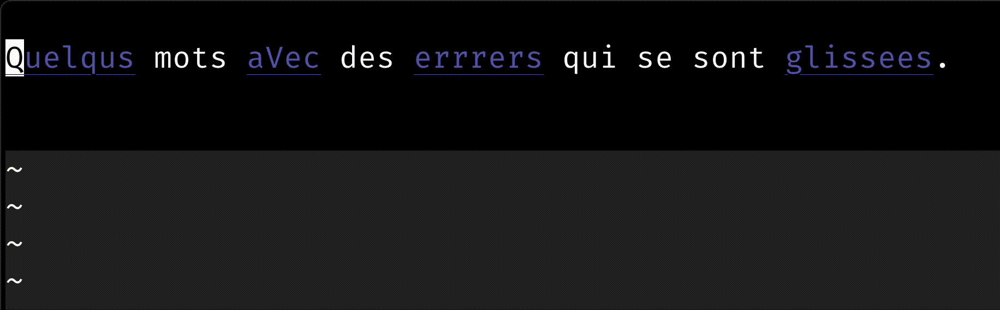
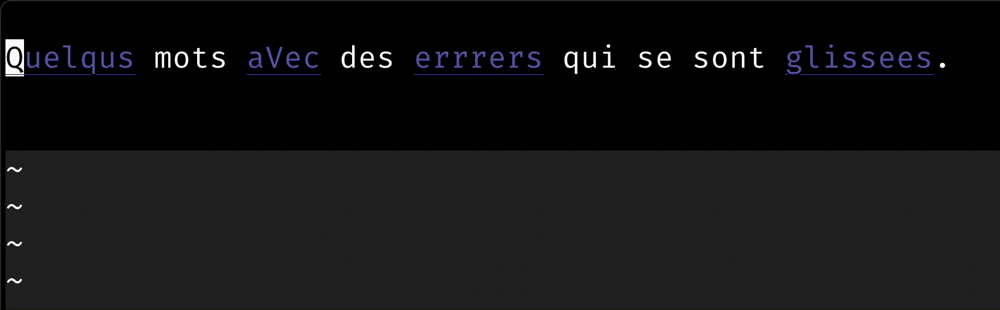
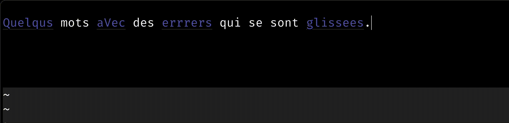

Cet article est une traduction des deux articles suivants
Vim possède un correcteur d’orthographe intégré, que l’on peut activer avec set spell. On peut ensuite changer la langue avec set spelllang=fr (ici pour passer en français).
Pour corriger une erreur, on peut utiliser z= sur un mot : cela affiche une liste des remplacements possibles. Pour se déplacer d’erreur en erreur, on utilise ]s (erreur suivante), et [s (erreur suivante).
Cela donne quelque chose comme ça :

C’est assez long, parce que pour chaque mot, il faut faire : z=1 puis appuyer sur entrée.
Meilleur raccourci pour remplacer
On peut aussi faire 1z= : cela sélectionne directement la première correction dans la liste. Mais 1z= est plutôt long à taper.
Une première solution est de créer un raccourci pour 1z=, comme za, par exemple.
nnoremap za 1z=Cela permet d’accélérer un peu :

Remplacer depuis le mode insertion
Lorsque l’on rédige des textes avec vim, on est plus souvent en mode insertion (à l’opposé, on est surtout en mode normal quand on édite du code).
Cela rend encore plus long le fait de corriger une faute de frappe, puisqu’il faut aller en mode normal, et revenir en mode insertion ensuite
Pour fluidifier ce mode d’édition (surtout si, comme moi, vous tapez vite mais avec peu de précision), on peut créer un raccourci qui, depuis le mode insertion, va corriger la dernière erreur, et revenir en mode insertion.
Cela donne quelque chose comme ça (le curseur est à droite, en mode insertion) :

Personnellement, j’utilise <c-q>, mais <c-l> peut être utilisé également, ou n’importe quel raccourci qui vous convient.
Le raccourci à ajouter est :
inoremap <c-q> <c-g>u<esc>[s1z=`]a<c-g>u- les
<c-g>upermettent d’annuler rapidement les remplacements - le
`]permet de remettre le curseur à la position de départ
<c-g>upermet d’annuler le remplacement appart- sinon, il sera considéré comme une partie de l’édition en cours
<esc>va en mode normal[sva à la dernière erreur avant le curseur1z=remplace l’erreur par la première correction disponible`]revient à la dernière position du curseur (au dernier caractère modifié)arevient en mode insertion<c-g>ufait à nouveau en sorte que l’annulation du remplacement soit faîte appart- sinon, il sera considéré comme une partie de l’édition future